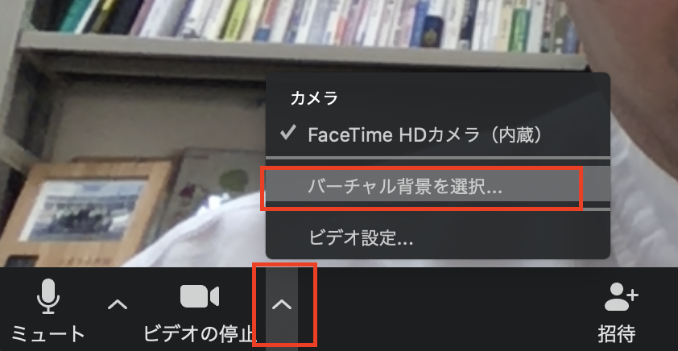
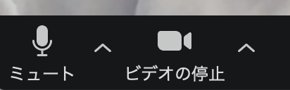
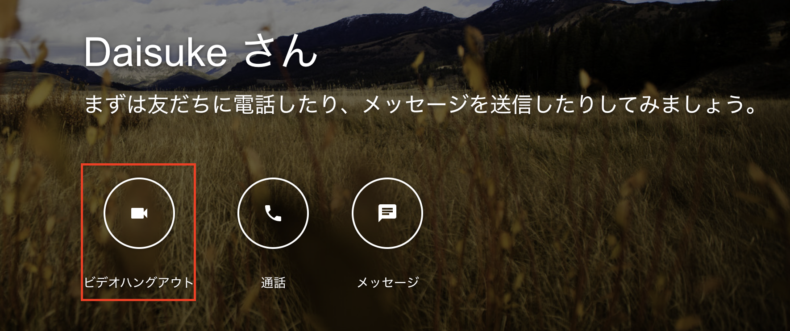
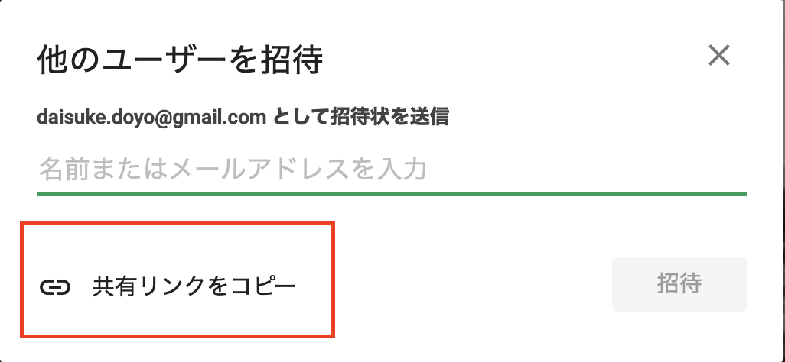
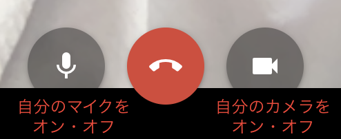

zoomはビデオ会議システムで大人数の会議、例えばゼミをweb上で行う場合などに使います。
ゼミを行う場合は道用がホストとなってミーティングを開催しURLをslackで連絡するので、学生はそのURLをクリックし、参加することになります。
アプリケーションはここからダウンロードできます。
事前にダウンロードしておきましょう。
★学生同士のミーティングにも使えますが、無料会員だと制限時間（40分）があるので、下で説明するgoogleハングアウトのほうがお手軽にミーティングができます。
【家の中を見られるのが嫌な人はバーチャル背景を使う】

こんな風に背景がバーチャルなものに置き換わります。


【音声のミュート】
周りの音がうるさい場合などは必要に応じて、自分のパソコンのマイクをオフ（ミュート）にしましょう。

googleアカウントを持っていれば手軽にミーティングを行えます。
【手順１】ハングアウトのページに行って、ビデオハングアウトをクリックします

【手順2】共有リンクをコピーをクリックして、slackで共有しましょう。

【音声のミュート】
周りの音がうるさい場合などは必要に応じて、自分のパソコンのマイクをオフ（ミュート）にしましょう。
